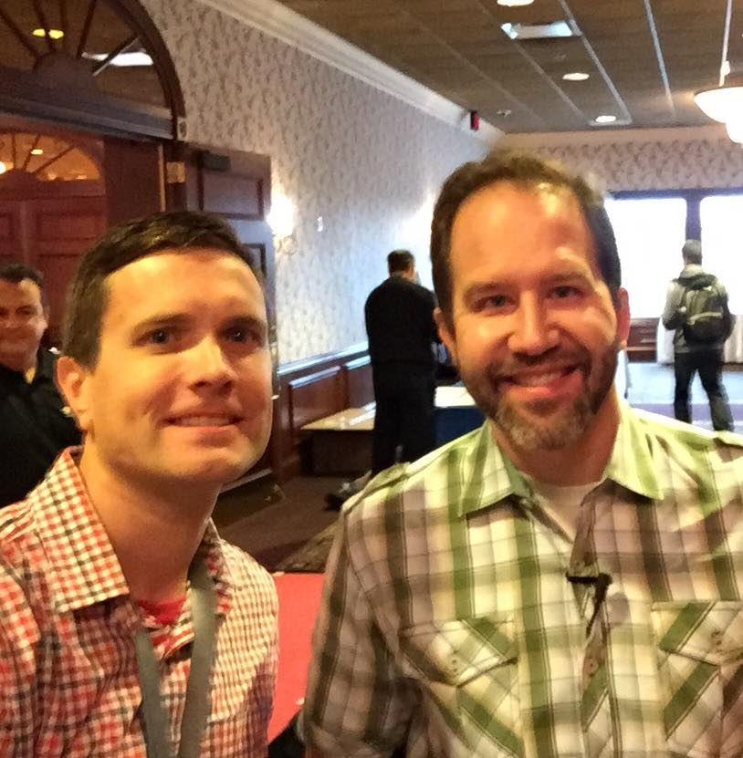

October was a crazy month! Aside from being peak soccer season for my kids, I spoke at Milwaukee Code Camp on the 15, and MKE DOT NET at the end of the month.
First off, thanks to everyone who attended my sessions! I had a great time. I really enjoy the storytelling part of speaking. It is quickly becoming clear to me that stories are how you draw people in.
Milwaukee Code Camp
At Milwaukee Code Camp, I presented my static site/JAM stack talk, in the "Backends? Where we're going we don't need...backends..." iteration. This talk has undergone constant revision since I first gave it, as I've been learning how to do technical speaking. It will change before the next time, too. I had some great feedback from people, and I also noticed some things on my own that I am looking forward to improving.
I battled some issues with the projector right as my talk was about to start. While I was waiting for help to arrive, I decided that I could get started without slides - and realized before help arrived that I could probably do this talk entirely without a projector. This was an encouraging feeling.
MKE DOT NET
After Milwaukee Code Camp, the crazy ramped even higher. Aside from speaking at MKE DOT NET, I was also fairly involved in helping organize the conference. The end of October was a crazy busy time. Thankfully, I work with a ton of really great people who volunteered to make the event run silky smooth, given some scheduling challenges from the venue.
My talk at MKE DOT NET almost couldn't have gone better. I had a great crowd, including some old friends. Everyone seemed really engaged - at one point I wanted to take a picture of literally the entire crowd looking up at a code sample, but the moment had passed by the time I got my phone out.
Slides for this talk can be found here.
One experiment from this talk that went really well was the use of a JavaScript-based presentation framework, instead of PowerPoint. I find that I spend a lot of time moving things around in PowerPoint, and I really wanted something where I could use CSS to keep my slides consistent. I also wanted to be able to keep my slides in a git repo. I did a little research and found that remarkjs most closely met the vision in my head.
It worked great! My plan moving forward is to use remarkjs to build all my decks. I am not the biggest fan of markdown but I love being able to outline my talk in code, and build it out from there.
There are a lot of great conversations I got out of these two events, but right up near the top was an opportunity to work with Scott Hanselman to prepare the A/V equipment for his keynote. I got some great tips from him on speaking, as well as making MKE DOT NET more diverse next year.

Up Next
My next scheduled talk will be at QA Camp in Milwaukee, on December 8th. I'll be speaking with a colleague on tightening the feedback loop with TDD and DevOps.
I've also got a couple proposals that I'm awaiting responses from, and I'm looking forward to submitting to as many CFPs as I can in the near future.